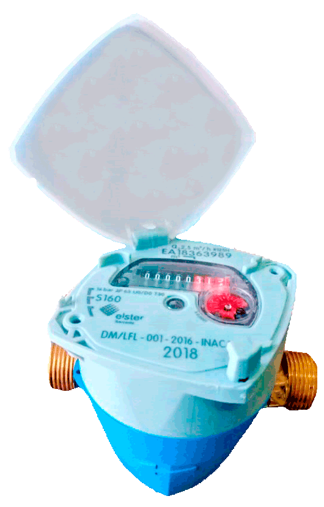
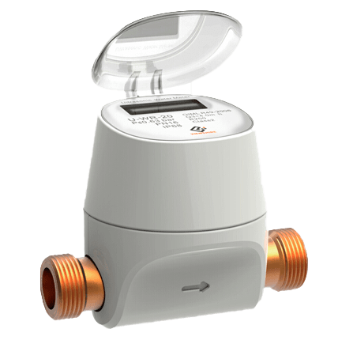
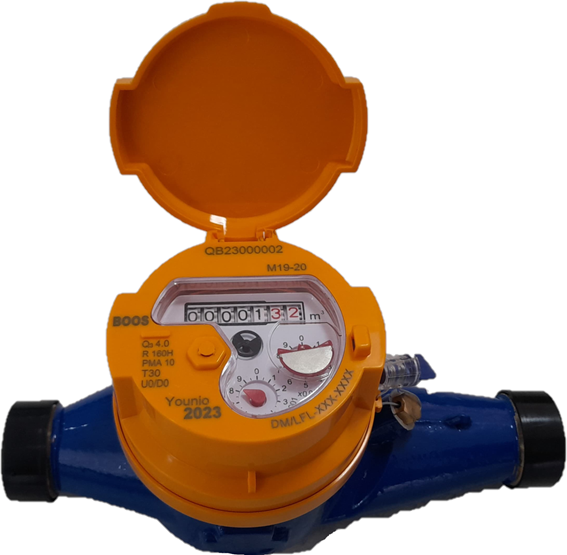
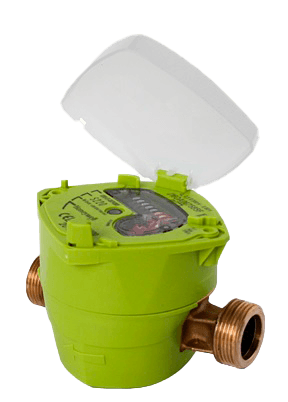
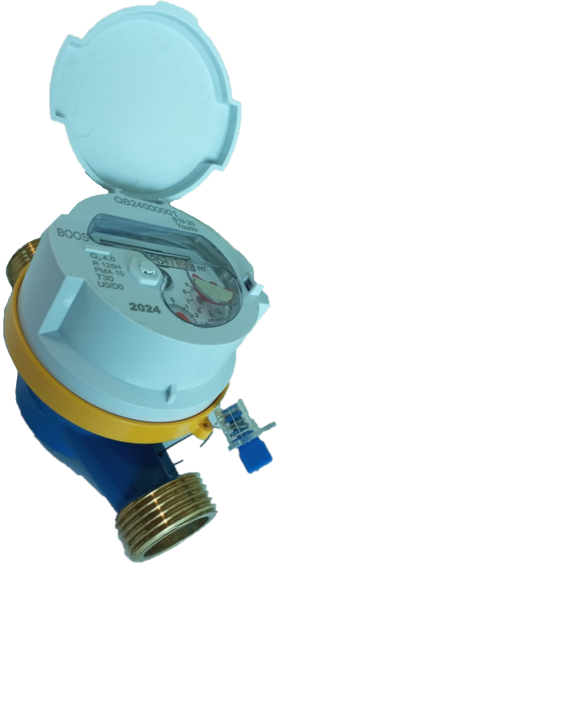
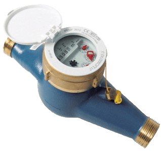
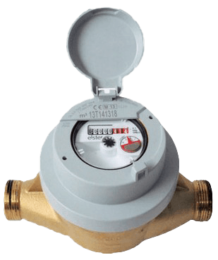

M19 - 15mm
BOOS
Medidor multichorro para uso residencial. Contador de chorro multiple con alta precision metrologica, ideal para viviendas y conexiones domiciliarias de 15mm.
Mas Informacion
S160 - 15mm
Elster (Honeywell)
Medidor de chorro unico con alta calidad metrologica. Tecnologia de transmision magnetica con cuatro imanes permanentes de ferrita, rango dinamico hasta R160.
Mas Informacion
U-WR 15mm / 20mm
Viewshine
Medidor ultrasonico residencial sin partes moviles. Precision de por vida, comunicacion inalambrica integrada compatible con sistemas MDC/MDM e instalacion vertical y horizontal.
Mas Informacion
M19 - 20mm
BOOS
Medidor multichorro para uso residencial de 20mm. Contador de chorro multiple con alta precision metrologica, ideal para conexiones domiciliarias de mayor caudal.
Mas Informacion
S220 - 20mm
Honeywell / Elster
Medidor de velocidad de chorro unico, norma ISO 4064. Transmision magnetica sin engranajes, certificado MID y OIML R49, totalizador de 5 tambores en m3.
Mas Informacion
S19 - 15mm / 20mm
BOOS
Medidor de chorro unico para uso residencial. Disponible en diametros de 15mm y 20mm, ideal para la medicion precisa en conexiones domiciliarias.
Mas Informacion
M120 - 25mm
Elster
Medidor multichorro certificado MID para caudales pequenos y medianos. Precision R160 en posicion horizontal, emisor de pulsos con deteccion de fraude.
Mas Informacion
V200 - 20mm
Elster
Medidor volumetrico de piston ranurado que previene deposito de particulas solidas. Conectividad EMERIS por radiofrecuencia, acoplamiento magnetico y deteccion de caudales extremadamente bajos.
Mas Informacion